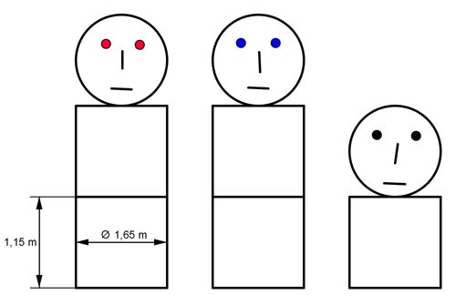

Aufgabe 133 Kinder haben diese Figuren aus Strohballen gleicher Größe hergestellt. Wie groß ist deren Gesamtgewicht m, wenn die Dichte von Stroh 0,12 kg/dm³ beträgt? Wie viel m² Folie braucht man, um die Ballen einzupacken?  Volumen eines zylindrischen Ballens: r = d/2 = 1,65 m/2 = 0,825 m VBallen = G * h G = п * r² = п * 0,825² m² = 2,14 m² VBallen = 2,14 m² * 1,15 m = 2,46 m³ Es sind 8 Ballen: V = 8 * VBallen = 8 * 2,46 m³ = 19,7 m³ m = V * р р = 0,12 kg/dm³ = 0,12 t/m³ m = 19,7 m³ * 0,12 t/m³ = 2,36 t Bedarf an Folie B = 8 * Oberfläche O O = 2 * G + 2 * п * r * h O = 2 * 2,14 m² + 2 * п * 0,825 m * 1,15 m O = 4,28 m² + 5,96 m² = 10,24 m² B = 8 * 10,24 m² = 81,9 m²